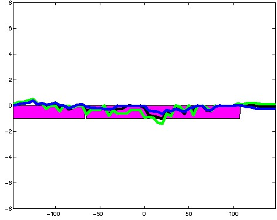
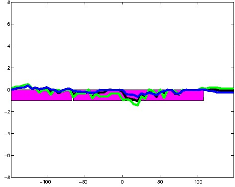
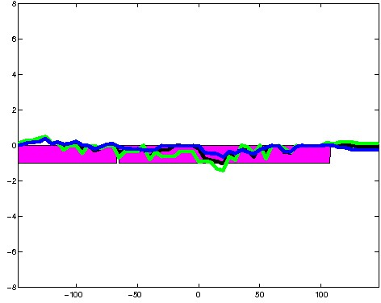

K562 Repressive DNase matched - State 9:DNaseU (n=45)
K562 Repressive DNase matched - State 9:DNaseU (n=45)
[
See group descriptions
]

; picked in K562 (state 9:DNaseU, DNase); matched; chr10:124,671,409-124,671,703 (295bp)")
; picked in K562 (state 9:DNaseU, DNase); matched; chr17:56,197,609-56,197,903 (295bp)")
; picked in K562 (state 9:DNaseU, DNase); matched; chr6:30,825,329-30,825,623 (295bp)")
; picked in K562 (state 9:DNaseU, DNase); matched; chr7:137,547,129-137,547,423 (295bp)")
; picked in K562 (state 9:DNaseU, DNase); matched; chr4:20,441,829-20,442,123 (295bp)")
; picked in K562 (state 9:DNaseU, DNase); matched; chr9:34,493,949-34,494,243 (295bp)")
; picked in K562 (state 9:DNaseU, DNase); matched; chr5:121,456,709-121,457,003 (295bp)")
; picked in K562 (state 9:DNaseU, DNase); matched; chr6:113,964,349-113,964,643 (295bp)")
; picked in K562 (state 9:DNaseU, DNase); matched; chr4:128,518,929-128,519,223 (295bp)")
; picked in K562 (state 9:DNaseU, DNase); matched; chr7:157,094,149-157,094,443 (295bp)")
; picked in K562 (state 9:DNaseU, DNase); matched; chr5:57,344,609-57,344,903 (295bp)")
; picked in K562 (state 9:DNaseU, DNase); matched; chr11:12,777,149-12,777,443 (295bp)")
; picked in K562 (state 9:DNaseU, DNase); matched; chr1:181,129,489-181,129,783 (295bp)")
; picked in K562 (state 9:DNaseU, DNase); matched; chr12:128,126,809-128,127,103 (295bp)")
; picked in K562 (state 9:DNaseU, DNase); matched; chr17:61,105,769-61,106,063 (295bp)")
; picked in K562 (state 9:DNaseU, DNase); matched; chr5:55,475,289-55,475,583 (295bp)")
; picked in K562 (state 9:DNaseU, DNase); matched; chr16:57,326,569-57,326,863 (295bp)")
; picked in K562 (state 9:DNaseU, DNase); matched; chr12:112,621,049-112,621,343 (295bp)")
; picked in K562 (state 9:DNaseU, DNase); matched; chr5:132,379,349-132,379,643 (295bp)")
; picked in K562 (state 9:DNaseU, DNase); matched; chr13:29,084,789-29,085,083 (295bp)")
; picked in K562 (state 9:DNaseU, DNase); matched; chr1:192,122,349-192,122,643 (295bp)")
; picked in K562 (state 9:DNaseU, DNase); matched; chr7:143,218,769-143,219,063 (295bp)")
; picked in K562 (state 9:DNaseU, DNase); matched; chr19:16,279,629-16,279,923 (295bp)")
; picked in K562 (state 9:DNaseU, DNase); matched; chr3:32,502,609-32,502,903 (295bp)")
; picked in K562 (state 9:DNaseU, DNase); matched; chr11:36,387,429-36,387,723 (295bp)")
; picked in K562 (state 9:DNaseU, DNase); matched; chr1:181,824,589-181,824,883 (295bp)")
; picked in K562 (state 9:DNaseU, DNase); matched; chrX:53,999,129-53,999,423 (295bp)")
; picked in K562 (state 9:DNaseU, DNase); matched; chr18:2,222,569-2,222,863 (295bp)")
; picked in K562 (state 9:DNaseU, DNase); matched; chr17:62,367,049-62,367,343 (295bp)")
; picked in K562 (state 9:DNaseU, DNase); matched; chr1:93,473,809-93,474,103 (295bp)") 
